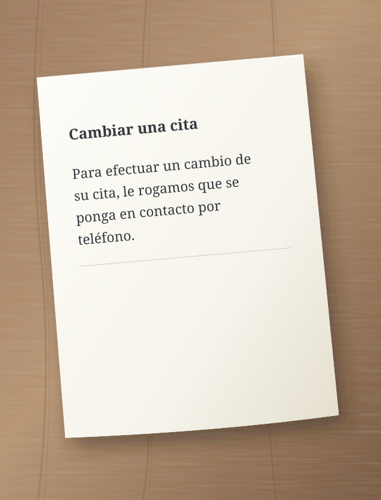
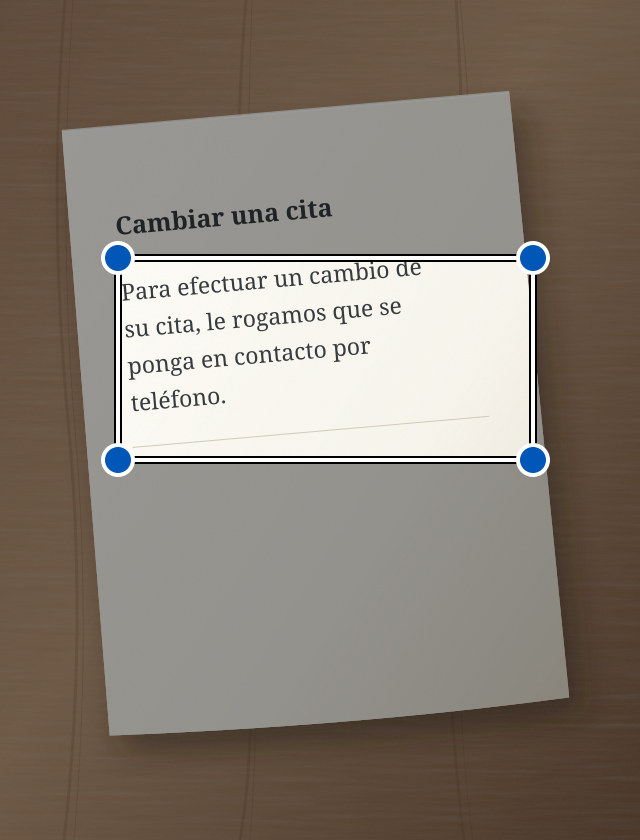

Una carta oficial, un mensaje largo, unas instrucciones complicadas. Sedno te ayuda a entenderlos con palabras más sencillas. También puede corregir tu texto y leerlo en voz alta.
Para efectuar un cambio de su cita, le rogamos que se ponga en contacto por teléfono.
↳ Texto simplificado
¿Quieres cambiar tu cita? Llámanos.
Ejemplo ilustrativo de simplificación.
Entender mejor. Actuar con más facilidad.
El lenguaje sencillo es para todos.
Creamos Sedno sobre todo para personas con dificultades auditivas y para quienes tienen problemas para entender textos complejos. Las palabras más sencillas pueden ayudarnos a todos.
De las palabras al sentido
Dos pasos sencillos.
01
Añade texto
Escribe, pega, haz una foto o habla.
02
Simplifica o corrige
Elige lo que necesitas. El resultado aparece en el mismo campo. Puedes seguir editándolo.
i La IA puede equivocarse. Comprueba la información importante en el original.
Mira dónde pulsar
Sedno, paso a paso.
Cada ejemplo muestra una tarea. El círculo indica dónde pulsar. La flecha muestra qué ocurre después.
Son dibujos simplificados de las pantallas. Los textos son ejemplos. La aplicación puede tener un aspecto algo diferente.
Simplifica un texto escrito
¿Un mensaje difícil? Escríbelo o pégalo en Sedno.
1 Escribe el texto y pulsa «Simplificar».
Comprueba que esté elegido el modo Simplificar.
Sedno – simplificar texto:
Para efectuar un cambio de su cita, le rogamos que se ponga en contacto por teléfono.
Simplificar
2 Lee el texto más sencillo.
El resultado aparece en el mismo campo. Puedes editarlo.
Texto simplificado
¿Quieres cambiar tu cita? Llámanos.
La IA puede equivocarse
Simplificar
Simplifica el texto de una foto
¿Una carta en papel? Haz una foto en Sedno.
1 Pulsa la cámara.
Se abre la cámara de la aplicación.
Sedno – simplificar texto:
Escribe o pega un texto
Simplificar
2 Pulsa «Hacer foto».
Sujeta el teléfono para que la página entera y el texto se vean nítidos.
Fotografiar texto

Hacer foto
3 Selecciona el texto y pulsa «Simplificar».
Mueve las esquinas del marco alrededor del texto que quieres simplificar.
Seleccionar texto
Mueve las esquinas del marco para seleccionar el texto.

Simplificar
4 Lee el texto más sencillo.
Sedno lee el texto de la foto y lo simplifica.
Texto simplificado
¿Quieres cambiar tu cita? Llámanos.
La IA puede equivocarse
Simplificar
La foto se queda en tu teléfono. Solo el texto reconocido se envía a la IA. Si falla la simplificación, el texto permanece en el campo para que puedas editarlo.
Simplifica lo que dices
¿Prefieres hablar en vez de escribir? Elige el modo Simplificar.
1 Pulsa el micrófono.
Si el teléfono pide acceso al micrófono, permítelo.
Sedno – simplificar texto:
Escribe o pega un texto
Simplificar
2 Di el texto en voz alta.
Habla en el idioma elegido. Haz una pausa breve al terminar.
Habla en el idioma elegido
Sedno convierte la voz en texto.
3 Lee el texto más sencillo.
Tras 1,5 segundos de silencio, Sedno simplifica automáticamente el texto reconocido.
Texto simplificado
¿Quieres cambiar tu cita? Llámanos.
La IA puede equivocarse
Simplificar
La voz se reconoce en el teléfono. Necesitas Android 13 o posterior, un dispositivo compatible y un modelo descargado del idioma elegido. La grabación dura como máximo un minuto. Parar cancela la grabación.
Corrige un texto escrito
¿Quieres corregir tu mensaje? Elige el modo Corregir antes de escribir.
1 Escribe el texto y pulsa «Corregir».
Cambia de modo con las flechas que hay encima del botón grande.
Sedno – corregir texto:
mañana no puedo hir a la reunion
Corregir
2 Lee el texto corregido.
Sedno corrige errores. Comprueba que el texto diga lo que quieres.
Texto corregido
Mañana no puedo ir a la reunión.
La IA puede equivocarse
Corregir
Escucha el texto corregido
En el modo Corregir, el teléfono puede leer en voz alta el texto del campo.
1 Pulsa el altavoz.
Primero corrige el texto. Después pulsa el altavoz de la izquierda.
Texto corregido
Mañana no puedo ir a la reunión.
La IA puede equivocarse
Corregir
2 Escucha el texto.
El teléfono lee en voz alta. El botón de parada detiene la lectura.
El teléfono lee en voz alta
Escucha el texto desde tu teléfono.
La lectura funciona en tu teléfono. Descarga una voz sin conexión del idioma elegido en los ajustes del teléfono.
Idioma
Elige tu idioma.
Sedno admite 13 variantes lingüísticas. En la aplicación, abre el menú y elige Idioma. La elección también se aplica al texto, al dictado y a la lectura. Sedno simplifica y corrige; no traduce entre idiomas.
Tus textos. Tu control.
Privacidad desde el principio.
Las fotos y el audio se quedan en el teléfono. Solo se envía el texto a la IA.
El texto de las fotos se reconoce en el dispositivo. La foto no se envía.
El audio se queda contigo
El teléfono reconoce la voz y lee el texto localmente. Sedno no envía audio a su servidor ni a OpenAI. Solo se envía el texto reconocido para simplificarlo.
La IA procesa el texto
El texto que quieres simplificar o corregir pasa por el servidor a OpenAI. El servidor Sedno no guarda su contenido.
Historial durante 7 días
El historial cifrado se guarda solo en tu dispositivo durante 7 días. Puedes borrarlo antes. Cerrar sesión borra el historial del teléfono.
Sedno
Palabras más cercanas a las personas.
La aplicación está en fase de pruebas. El enlace de descarga aparecerá aquí después del lanzamiento.